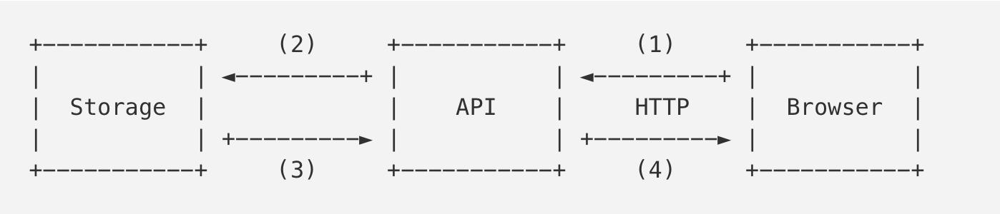
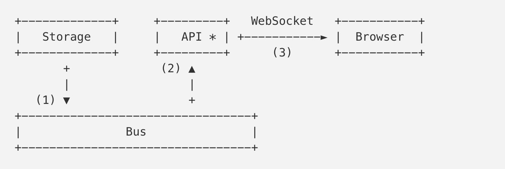

原文: A Million WebSockets and Go
作者: Sergey Kamardin
译文: 性能优化实战：百万级WebSockets和Go语言
译者: 曼托斯
大家好！我的名字叫Sergey Kamardin。我是来自Mail.Ru的一名工程师。这篇文章将讲述我们是如何用Go语言开发一个高负荷的WebSocket服务。即使你对WebSockets熟悉但对Go语言知之甚少，我还是希望这篇文章里讲到的性能优化的思路和技术对你有所启发。
介绍
作为全文的铺垫，我想先讲一下我们为什么要开发这个服务。
Mail.Ru有许多包含状态的系统。用户的电子邮件存储是其中之一。有很多办法来跟踪这些状态的改变。不外乎通过定期的轮询或者系统通知来得到状态的变化。这两种方法都有它们的优缺点。对邮件这个产品来说，让用户尽快收到新的邮件是一个考量指标。邮件的轮询会产生大概每秒5万个HTTP请求，其中60%的请求会返回304状态（表示邮箱没有变化）。因此，为了减少服务器的负荷并加速邮件的接收，我们决定重写一个publisher-subscriber服务（这个服务通常也会称作bus，message broker或者event-channel）。这个服务负责接收状态更新的通知，然后还处理对这些更新的订阅。
重写publisher-subscriber服务之前：

现在：

上面第一个图为旧的架构。浏览器（Browser）会定期轮询API服务来获得邮件存储服务（Storage）的更新。
第二张图展示的是新的架构。浏览器（Browser）和通知API服务（notificcation API）建立一个WebSocket连接。通知API服务会发送相关的订阅到Bus服务上。当收到新的电子邮件时，存储服务（Storage）向Bus（1）发送一个通知，Bus又将通知发送给相应的订阅者（2）。API服务为收到的通知找到相应的连接，然后把通知推送到用户的浏览器（3）。
我们今天就来讨论一下这个API服务（也可以叫做WebSocket服务）。在开始之前，我想提一下这个在线服务处理将近3百万个连接。
惯用的做法（The idiomatic way）
首先，我们看一下不做任何优化会如何用Go来实现这个服务的部分功能。在使用net/http 实现具体功能前，让我们先讨论下我们将如何发送和接收数据。这些数据是定义在WebSocket协议之上的（例如JSON对象）。我们在下文中会成他们为packet。
我们先来实现Channel 结构。它包含相应的逻辑来通过WebScoket连接发送和接收packet。
Channel结构
|
|
这里我要强调的是读和写这两个goroutines。每个goroutine都需要各自的内存栈。栈的初始大小由操作系统和Go的版本决定，通常在2KB到8KB之间。我们之前提到有3百万个在线连接，如果每个goroutine栈需要4KB的话，所有连接就需要24GB的内存。这还没算上给Channel 结构，发送packet用的ch.send 和其它一些内部字段分配的内存空间。
I/O goroutines
接下来看一下“reader”的实现：
|
|
这里我们使用了bufio.Reader 。每次都会在buf 大小允许的范围内尽量读取多的字节，从而减少read() 系统调用的次数。在无限循环中，我们期望会接收到新的数据。请记住之前这句话：期望接收到新的数据。我们之后会讨论到这一点。
我们把packet的解析和处理逻辑都忽略掉了，因为它们和我们要讨论的优化不相关。不过buf 值得我们的关注：它的缺省大小是4KB。这意味着所有连接将消耗掉额外的12 GB内存。“writer”也是类似的情况：
|
|
我们在待发送packet的c.send channel上循环将packet写到缓存（buffer）里。细心的读者肯定已经发现，这又是额外的4KB内存。3百万个连接会占用12GB的内存。
HTTP
我们已经有了一个简单的Channel 实现。现在我们需要一个WebSocket连接。因为还在通常做法（Idiomatic Way)的标题下，那么就先来看看通常是如何实现的。
注：如果你不知道WebSocket是怎么工作的，那么这里值得一提的是客户端是通过一个叫升级（Upgrade）请求的特殊HTTP机制来建立WebSocket的。在成功处理升级请求以后，服务端和客户端使用TCP连接来交换二进制的WebSocket帧（frames）。这里有关于帧结构的描述。
|
|
请注意这里的http.ResponseWriter 结构包含bufio.Reader 和bufio.Writer （各自分别包含4KB的缓存）。它们用于*http.Request 初始化和返回结果。
不管是哪个WebSocket，在成功回应一个升级请求之后，服务端在调用responseWriter.Hijack() 之后会接收到一个I/O缓存和对应的TCP连接。
注：有时候我们可以通过
net/http.putBufio{Reader,Writer}调用把缓存释放回net/http里的sync.Pool。
这样，这3百万个连接又需要额外的24GB内存。
所以，为了这个什么都不干的程序，我们已经占用了72GB的内存！
优化
我们来回顾一下前面介绍的用户连接的工作流程。在建立WebSocket之后，客户端会发送请求订阅相关事件（我们这里忽略类似ping/pong 的请求）。接下来，在整个连接的生命周期里，客户端可能就不会发送任何其它数据了。
连接的生命周期可能会持续几秒钟到几天。
所以在大部分时间里，Channel.reader() 和Channel.writer() 都在等待接收和发送数据。与它们一起等待的是各自分配的4 KB的I/O缓存。
现在，我们发现有些地方是可以做进一步优化的，对吧？
Netpoll
你还记得Channel.reader() 的实现使用了bufio.Reader.Read() 吗？bufio.Reader.Read() 又会调用conn.Read() 。这个调用会被阻塞以等待接收连接上的新数据。如果连接上有新的数据，Go的运行环境（runtime）就会唤醒相应的goroutine让它去读取下一个packet。之后，goroutine会被再次阻塞来等待新的数据。我们来研究下Go的运行环境是怎么知道goroutine需要被唤醒的。
如果我们看一下conn.Read() 的实现，就会看到它调用了net.netFD.Read() ：
|
|
Go使用了sockets的非阻塞模式。EAGAIN表示socket里没有数据了但不会阻塞在空的socket上，OS会把控制权返回给用户进程。
这里它首先对连接文件描述符进行read() 系统调用。如果read() 返回的是EAGAIN 错误，运行环境就是调用pollDesc.waitRead() ：
|
|
如果继续深挖，我们可以看到netpoll的实现在Linux里用的是epoll而在BSD里用的是kqueue。我们的这些连接为什么不采用类似的方式呢？只有在socket上有可读数据时，才分配缓存空间并启用读数据的goroutine。
在github.com/golang/go上，有一个关于 暴露(export) netpoll函数的请求。
干掉goroutines
假设我们用Go语言实现了netpoll。我们现在可以避免创建Channel.reader() 的goroutine，取而代之的是从订阅连接里收到新数据的事件。
|
|
Channel.writer() 相对容易一点，因为我们只需在发送packet的时候创建goroutine并分配缓存。
|
|
注意，这里我们没有处理
write()系统调用时返回的EAGAIN。我们依赖Go运行环境去处理它。这种情况很少发生。如果需要的话我们还是可以像之前那样来处理。
从ch.send 读取待发送的packets之后，ch.writer() 会完成它的操作，最后释放goroutine的栈和用于发送的缓存。
很不错！通过避免这两个连续运行的goroutine所占用的I/O缓存和栈内存，我们已经节省了48GB。
控制资源
大量的连接不仅仅会造成大量的内存消耗。在开发服务端的时候，我们还不停地遇到竞争条件（race conditions）和死锁（deadlocks）。随之而来的是所谓的自我分布式阻断攻击（self-DDOS）。在这种情况下，客户端会悍然地尝试重新连接服务端而把情况搞得更加糟糕。
举个例子，如果因为某种原因我们突然无法处理ping/pong 消息，这些空闲连接就会不断地被关闭（它们会以为这些连接已经无效因此不会收到数据）。然后客户端每N秒就会以为失去了连接并尝试重新建立连接，而不是继续等待服务端发来的消息。
在这种情况下，比较好的办法是让负载过重的服务端停止接受新的连接，这样负载均衡器（例如nginx）就可以把请求转到其它的服务端上去。
撇开服务端的负载不说，如果所有的客户端突然（很可能是因为某个bug）向服务端发送一个packet，我们之前节省的48 GB内存又将会被消耗掉。因为这时我们又会和开始一样给每个连接创建goroutine并分配缓存。
Goroutine池
可以用一个goroutine池来限制同时处理packets的数目。下面的代码是一个简单的实现：
|
|
我们使用netpoll的代码就变成下面这样：
|
|
现在我们不仅要等可读的数据出现在socket上才能读packet，还必须等到从池里获取到空闲的goroutine。
同样的，我们修改下Send() 的代码：
|
|
这里我们没有调用go ch.writer() ，而是想重复利用池里goroutine来发送数据。 所以，如果一个池有N 个goroutines的话，我们可以保证有N 个请求被同时处理。而N + 1 个请求不会分配N + 1 个缓存。goroutine池允许我们限制对新连接的Accept() 和Upgrade() ，这样就避免了大部分DDoS的情况。
零拷贝升级（Zero-copy upgrade）
之前已经提到，客户端通过HTTP升级（Upgrade）请求切换到WebSocket协议。下面显示的是一个升级请求：
|
|
我们接收HTTP请求和它的头部只是为了切换到WebSocket协议，而http.Request 里保存了所有头部的数据。从这里可以得到启发，如果是为了优化，我们可以放弃使用标准的net/http 服务并在处理HTTP请求的时候避免无用的内存分配和拷贝。
举个例子，
http.Request包含了一个叫做Header的字段。标准net/http服务会将请求里的所有头部数据全部无条件地拷贝到Header字段里。你可以想象这个字段会保存许多冗余的数据，例如一个包含很长cookie的头部。
我们如何来优化呢？
WebSocket实现
不幸的是，在我们优化服务端的时候所有能找到的库只支持对标准net/http 服务做升级。而且没有一个库允许我们实现上面提到的读和写的优化。为了使这些优化成为可能，我们必须有一套底层的API来操作WebSocket。为了重用缓存，我们需要类似下面这样的协议函数：
|
|
如果我们有一个包含这样API的库，我们就按照下面的方式从连接上读取packets：
|
|
简而言之，我们需要自己写一个库。
github.com/gobwas/ws
ws 库的主要设计思想是不将协议的操作逻辑暴露给用户。所有读写函数都接受通用的io.Reader 和io.Writer 接口。因此它可以随意搭配是否使用缓存以及其它I/O的库。
除了标准库net/http 里的升级请求，ws 还支持零拷贝升级。它能够处理升级请求并切换到WebSocket模式而不产生任何内存分配或者拷贝。ws.Upgrade() 接受io.ReadWriter （net.Conn 实现了这个接口）。换句话说，我们可以使用标准的net.Listen() 函数然后把从ln.Accept() 收到的连接马上交给ws.Upgrade() 去处理。库也允许拷贝任何请求数据来满足将来应用的需求（举个例子，拷贝Cookie 来验证一个session）。
下面是处理升级请求的性能测试：标准net/http 库的实现和使用零拷贝升级的net.Listen() ：
|
|
使用ws 以及零拷贝升级为我们节省了24 GB的空间。这些空间原本被用做net/http 里处理请求的I/O缓存。
回顾
让我们来回顾一下之前提到过的优化：
- 一个包含缓存的读goroutine会占用很多内存。方案： netpoll（epoll, kqueue）；重用缓存。
- 一个包含缓存的写goroutine会占用很多内存。方案： 在需要的时候创建goroutine；重用缓存。
- 存在大量连接请求的时候，netpoll不能很好工作。方案： 重用goroutines并且限制它们的数目。
- net/http 对升级到WebSocket请求的处理不是最高效的。方案： 在TCP连接上实现零拷贝升级。
下面是服务端的大致实现代码：
|
|
结论
在程序设计时，过早优化是万恶之源。Donald Knuth
上面的优化是有意义的，但不是所有情况都适用。举个例子，如果空闲资源（内存，CPU）与在线连接数之间的比例很高的话，优化就没有太多意义。当然，知道什么地方可以优化以及如何优化总是有帮助的。
谢谢你的关注！
引用
- https://github.com/mailru/easygo
- https://github.com/gobwas/ws
- https://github.com/gobwas/ws-examples
- https://github.com/gobwas/httphead
以下非译文中的内容，我也是看到优化的数字而感到疑惑：
作者最后计算优化一共节省了
48GB + 24GB内存， 可以原先作者总共的内存占用为24GB+12GB+12GB_24GB,如果按照这个数计算，作者最后只需要零内存，这是不可能的，因为每个连接的协议栈会占用一部分内存， 每个goroutine的栈也会占用一部分内存，还有buffer需要一定量的内存。
实际作者在评论中说， 原先每个连接平均占用 65KB的内存， 优化后只占10KB的内存，优化效果明显。